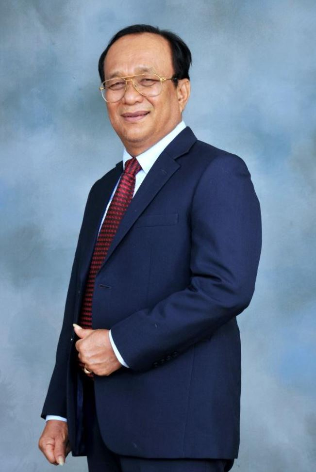

Senior Partner Prof. Dr. M. S. Tumanggor, SH. M.Si. CTA.
Prior to joining this Law Firm, he spent decades in Capital Markets as Senior Official at Capital Market Executive Agency (BAPEPAM), later BAPEPAM-LK, now Financial Services Authority (OJK). He is a “Grand Master” of change, reform, and formulation of various Capital Market regulations enabling companies to go public.
Author of several scientific works on Capital Markets and lecturer at several universities in Indonesia. He ever told:
“The progress and prosperity of a nation and state can also be measured from the progress of its Capital Market.”